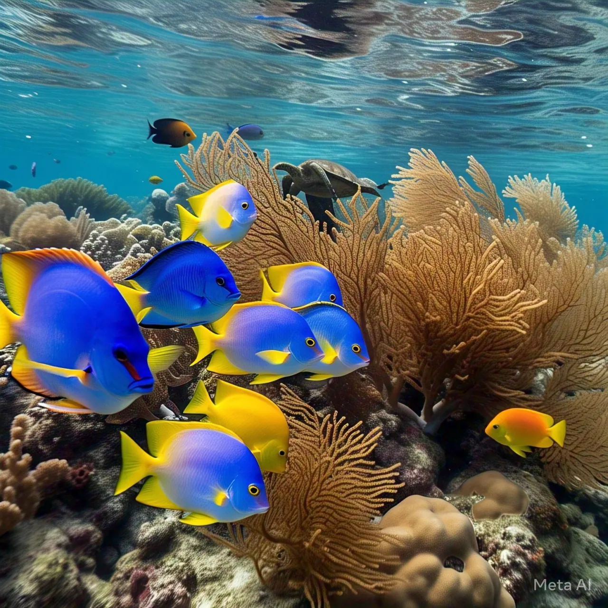
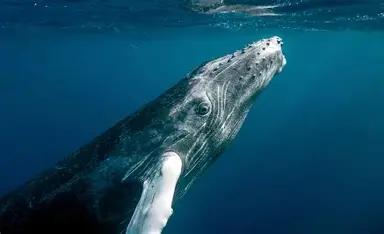

Fish
Clownfish
Amphiprioninae
Clownfish live safely among the stinging tentacles of sea anemones on coral reefs. This is the fish that inspired Nemo.

Fish breathe underwater with gills and swim with fins. They live in rivers, lakes, coral reefs and the deep sea, and they come in more shapes and sizes than any other group of vertebrates.
Select “Learn more” on any card for habitat, diet and a fun fact.
Fish
Amphiprioninae
Clownfish live safely among the stinging tentacles of sea anemones on coral reefs. This is the fish that inspired Nemo.
Fish
Selachimorpha
Sharks are fish with skeletons of cartilage, not bone. Most sharks are not dangerous to people, and many are very important to ocean health.
Fish
Tetraodontidae
When threatened, a pufferfish gulps water and swells into a ball. Many are poisonous if eaten.
Fish
Carassius auratus
A hardy freshwater fish kept as a pet for centuries. Goldfish can live for a decade or more with good care.
Six quick facts about life under the surface.
Plenty of animals live in the sea without being fish.
Mammals. They breathe air and feed their calves milk.
Soft animals with stinging tentacles, no bones and no gills.
Tiny animals called polyps that build reefs together.
Mollusks with soft bodies and eight arms.


Test what you just learned. Nine sea animals, one question each.